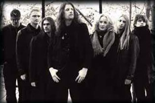
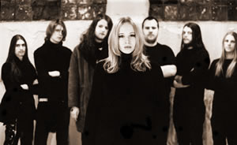

A banda sueca, Draconian teve seu início
em 1994 quando Johan Ericson (bateria e vocais), Andy Hindenäs
(guitarra) e Jesper Stolpe (baixo e vocais) se juntaram com o
Kerberos, um conjunto de metal de Heavy/Death melódico
com influências de Black Metal. Após sete meses,
o vocalista e poeta, Anders Jacobsson entra na banda e mudam o
nome para Draconian.
Nos meses posteriores, a banda trabalha exaustivamente
para fazer sua primeira gravação demo, o que ocorre
em outubro de 1995, no Estúdio Källgren. Uma semana
depois a banda faz seu primeiro ao vivo.
Em fevereiro de 1996, com a ajuda de Jessica
Eriksson (flauta e vocais), Susanne Arvidsson (vocais e teclado),
Andreas Haag e Magnus "Bergis" Bergström, a demo
ao vivo é tornada pública. A demo intitulada Shades
of a Lost Moon, recebe excelentes críticas, aguçando
comentário sobre a que rótulo enquadrar a banda.
Em
janeiro de 1997, o Draconian grava sua segunda demo, In Glorious
Victory, a qual não chega a ser liberada para o público,
em razão de seu imenso tamanho.
Logo após, o tecladista Andreas Karlsson
é incorporado à banda e começam a criação
de novos materiais.
Em agosto de 1999, a banda volta ao estúdio
para gravar sua terceira demo, The Closed Eye of Paradise,
um álbum com um tema místico e dark, falando sobre
a eterna batalha entre Lúcifer e os anjos caídos,
contra a verdadeira face de Deus. A produção ficou
péssima, bem longe da qualidade do Draconian. Assim, a
banda optou por melhorar a demo antes de seu lançamento,
entre os meses de maio e junho. Melodias novas foram adicionadas,
assim como efeitos que tinham sido omitidos erroneamente no estúdio.
O esforço valeu a pena, e a demonstração
foi liberada finalmente.
A banda, aos poucos, foi mudando seu estilo de
fazer música, tornando seu som mais lento, mais obscuro
e doom. Já nesse novo rumo, eles gravam o promo Frozen
Features, disponibilizado tanto pela internet, quanto em
formato de CD. Logo após esta gravação, o
baterista Andy Hindenäs sai da banda e em seu lugar entra
Jerry Torstensson.
No verão de 2002 é gravada uma
demo final, que sacramentaria o Draconian, como uma das grandes
promessas do cenário metal. A demo Dark Oceans We Cry
recebe excelentes críticas e rende à banda um contrato
com a gravadora Napalm Records.
Em julho de 2003 a banda, grava seu álbum
de debute, Where Lovers Mourn, depois de quase uma década
de vida. O álbum possui aquela levada típica das
bandas de gothic/doom metal, com uma sonoridade bem arrastada,
pesada e atmosférica, contando com os vocais rasgados de
Anders Jacobsson em contraste com a voz lírica de Lisa
Johansson. Os destaques ficam para a faixa inicial, The Cry
of Silence, com seus mais de 12 minutos do típico
e bem trabalhado, Doom Metal e The Amaranth, uma composição
empolgante. Outro bom resultado é obtido em It Grieves
my Heart, por sua versatilidade e mudanças de andamento.
Logo em seguida, a banda sai em turnê para
divulgação do álbum. Sem demora, entram em
estúdio novamente, logo após a turnê, para
a gravação de seu segundo álbum. As gravações
são finalizadas no final de 2004 e a banda lança
em janeiro de 2005 o álbum Arcane Rain Fell. O
trabalho traz algumas mudanças em relação
ao primeiro trabalho, mas mantém a boa qualidade, sendo
bastante elogiado pela imprensa européia e norte-americana.
Em faixas como Apostasy Canticle, a banda mostra toda
sua energia com um ritmo Death imposto pelas guitarras e bateria.
Há mais diferenciais, como a variação de
Anders nos vocais masculinos, ora cantando em tom limpo e grave,
com boa dose de melancolia, ora simplesmente fazendo uma hipnótica
narração, como em Expostulation. O destaque
maior fica por conta de The Abhorrent Rays, com uma contagiante
melodia, notadamente Dark, além de ser a faixa onde fica
mais evidente o talento do vocalista Anders. No restante do álbum,
a aparição de Lisa é bem pequena, só
ocorrendo nos momentos certos, o que acaba sendo a grande sacada
neste álbum.
Meses
depois, Daniel Arvidsson entra no lugar no guitarrista Magnus
Bergström e no começo de 2006 é a vez do baixista
Jesper Stolpe, deixar a banda em razão do nascimento de
seu filho. Em seu lugar entra o habilidoso baixista Fredrik Johansson.
Em setembro de 2006 a banda lança o álbum
The Burning Halo, mais um sucesso absoluto! As três
faixas inéditas deste novo trabalho, conseguem de forma
ímpar criar um ambiente soturno, depressivo e melancólico
através de riffs poderosos e arrastados, uma seção
rítmica coesa e intrincada, teclados etéreos e uma
já consagrada dualidade vocal entre gutural de Anders e
o angelical de Lisa. A banda também brinda os fãs,
com a regravação das três faixas da demo de
1999, The Closed Eyes of Paradise, numa interessante
visão do passado da banda, e duas versões: One
Day They Will Kill The World do Ekseption e Forever My
Queen do Pentagram.
Em setembro de 2007 a banda volta aos estúdios
para a iniciar a gravação de seu quarto álbum.
Turning Season Within foi produzido por Jens Bogren e
David Castillo, gravado no Fascination Street Studios e lançado
em fevereiro de 2008. O álbum traz nove faixas e mantém
a linha sonora dos discos anteriores: pulsação lenta
e arranjos pesados (característicos do Doom Metal) mesclado
com teclados atmosféricos, vocais guturais e vocais femininos.
Turning Season Within é um trabalho que mantém
a conhecida qualidade do Draconian e agradou imediatamente a crítica
especializada e os ouvintes mais exigentes.
Uma carreira longa baseada na qualidade e sofisticação.
Assim pode ser resumida a tragetória musical do Draconian;
que, salvo alguma catástrofe, conduzirá em breve
a ascensão dos suecos ao trono do Doom Metal mundial.
Por
Spectrum